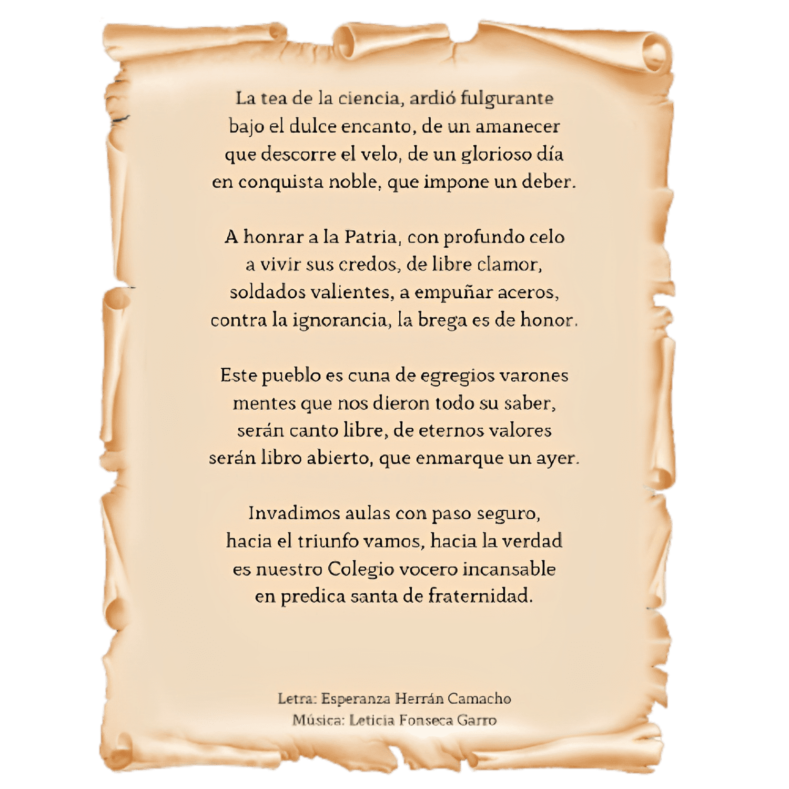

Reseña histórica

Himno CTP Ing. Mario Quirós Sasso
1968


Nuestra misión y visión
" Formar jóvenes profesionales en el área técnica vocacional con ventajas
competitivas que los hacen ser efectivos dentro de su campo de acción. El deseo
de superación y el compromiso con los principios éticos y morales que
distinguen a la institución logran la calidad en el servicio que ellos y ellas ofrecen."
" Ser la institución líder en la educación técnica diurna y nocturna, aportando
estudiantes graduados con un alto grado de conocimiento técnico y académico, que se
incorporen al mercado laboral dentro y fuera de las fronteras de Costa Rica.
Esto se logra operacionalizando el proceso de enseñanza y aprendizaje en todas las
especialidades técnicas y académicas de la organización educativa, mejorando día a día
la planta física del colegio y con un personal docente, técnico docente, administrativo, estudiantil y padres, madres o encargados comprometidos ética y profesionalmente, con la calidad de la educación costarricense."